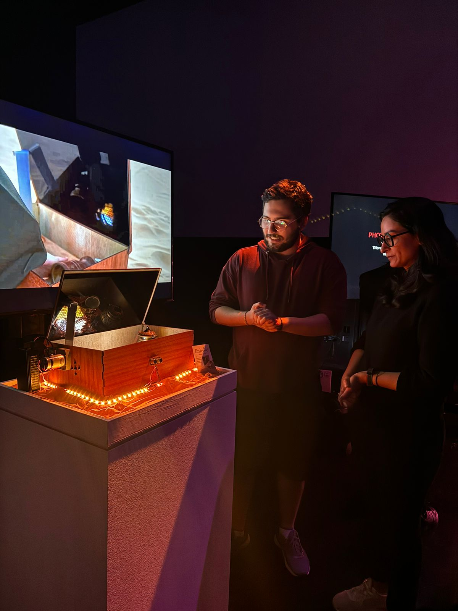
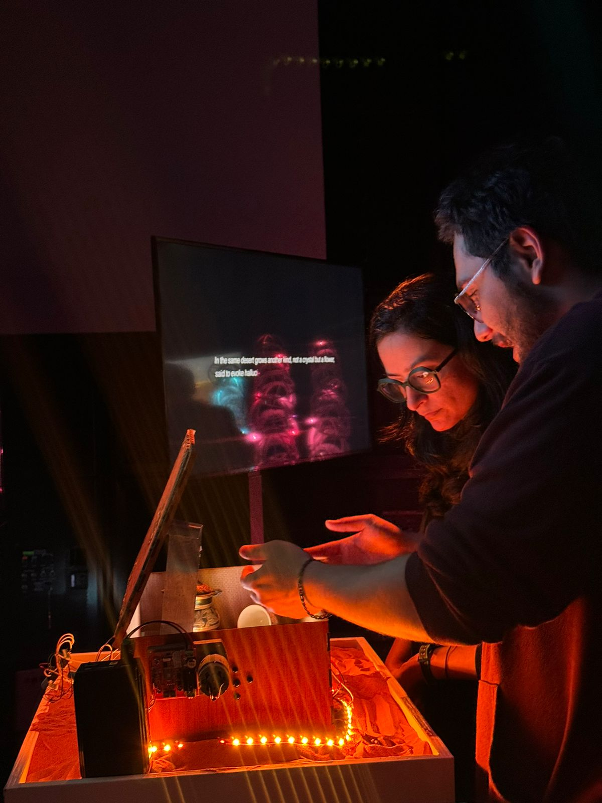
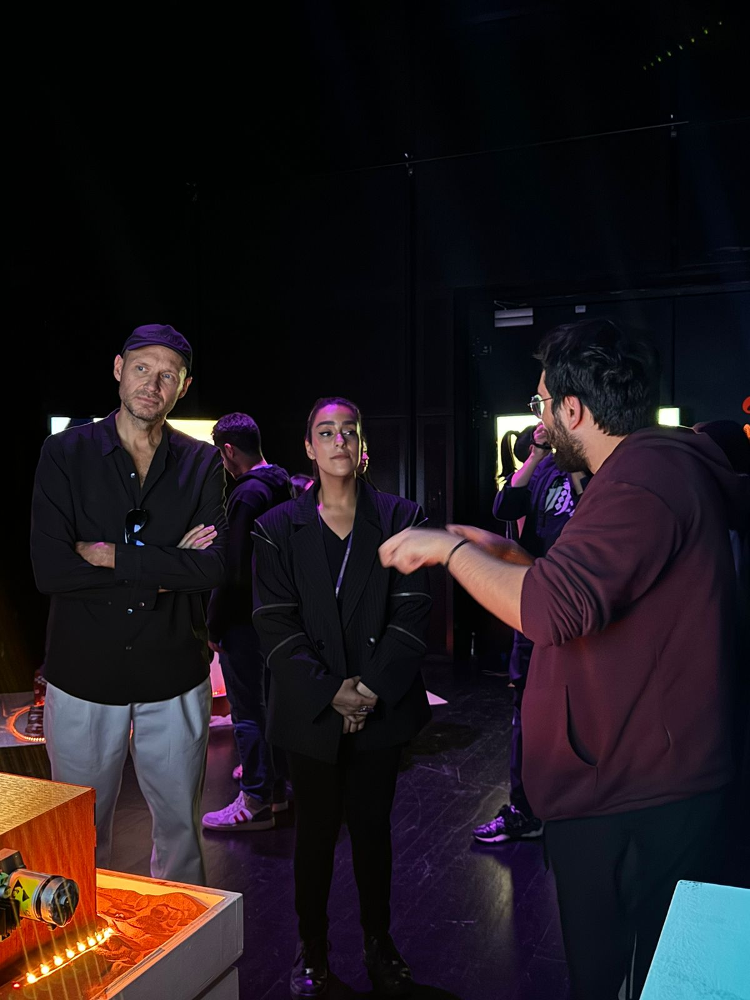
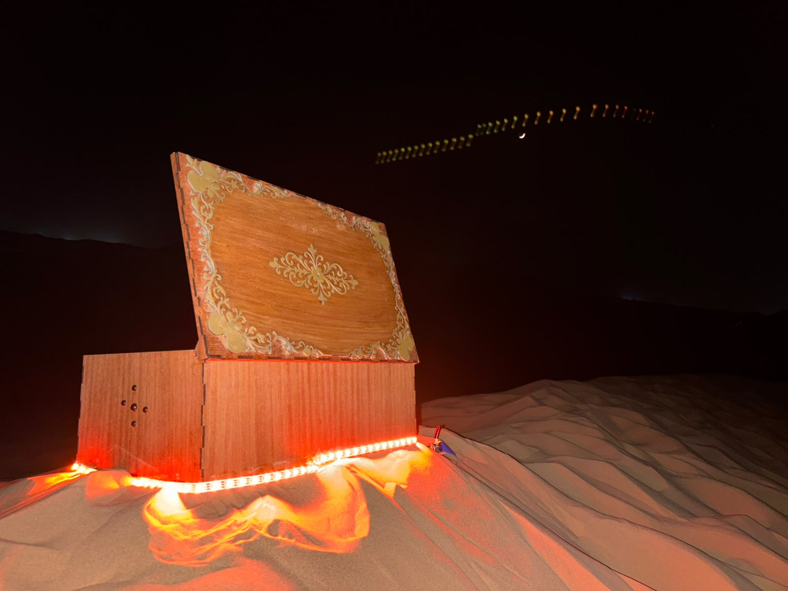
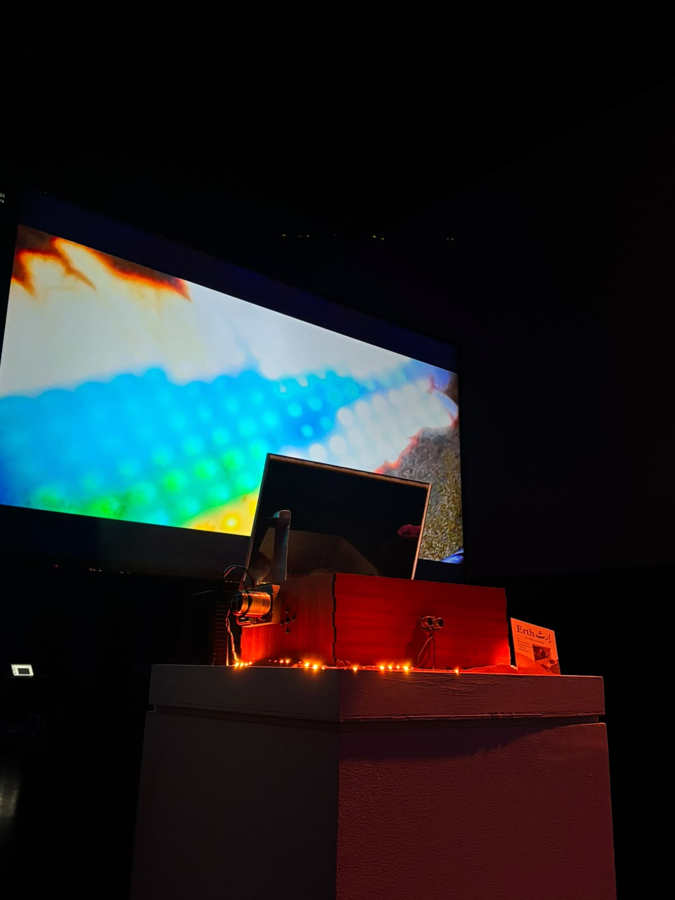
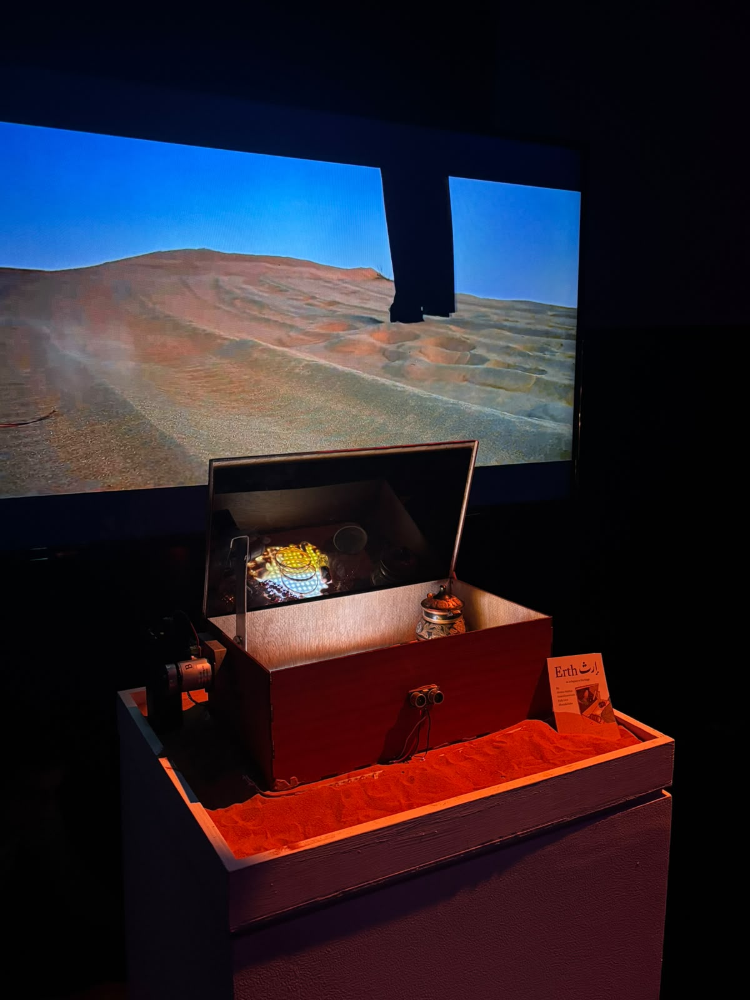
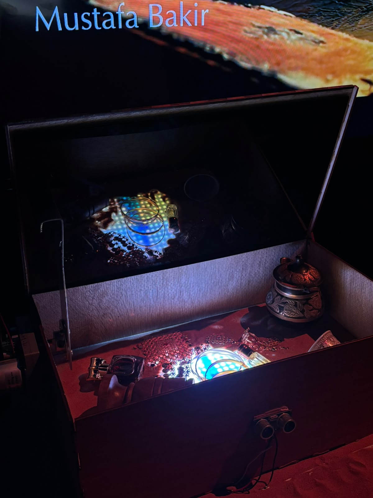

Concept
Erth (إرث — "inheritance") is an interactive installation about heritage as something buried and rediscovered. A chest sits half-sunk in red desert sand; a projected dune landscape breathes behind it. The visitor is invited to open, look, and handle — turning an audience into an inheritor.
The experience
Through a viewer and the objects inside the chest, fragments of an Emirati landscape and its artifacts come into focus. The piece asks what carries across generations, and what the desert keeps.
TODO: replace with the real concept, your role, the interaction design, and the technology used (projection, sensors, fabrication).
gallery






